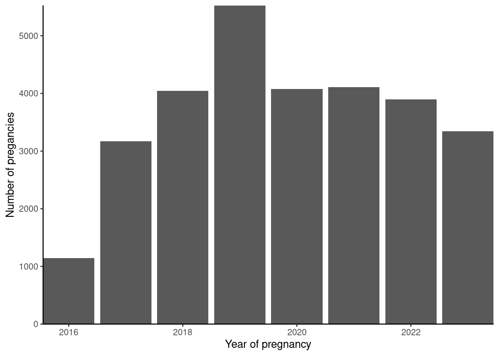
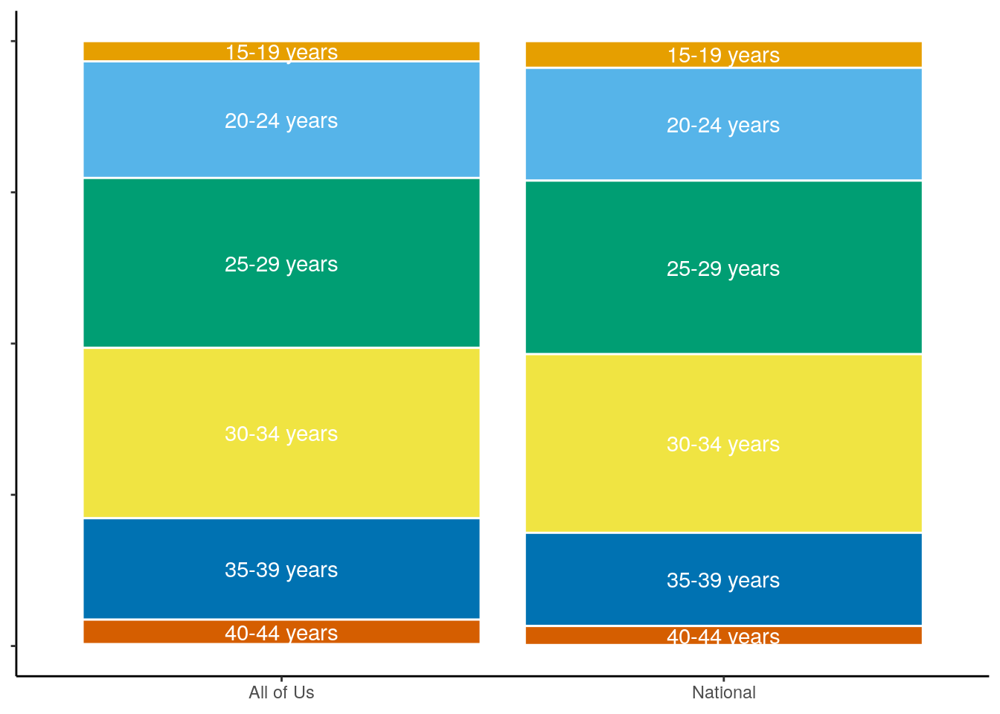
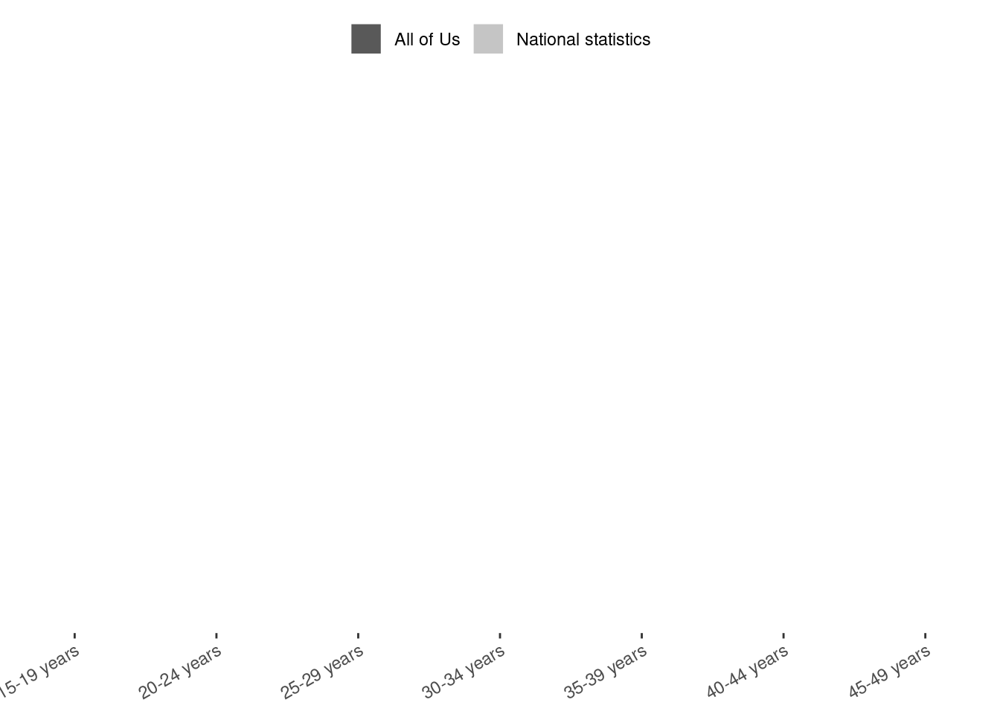
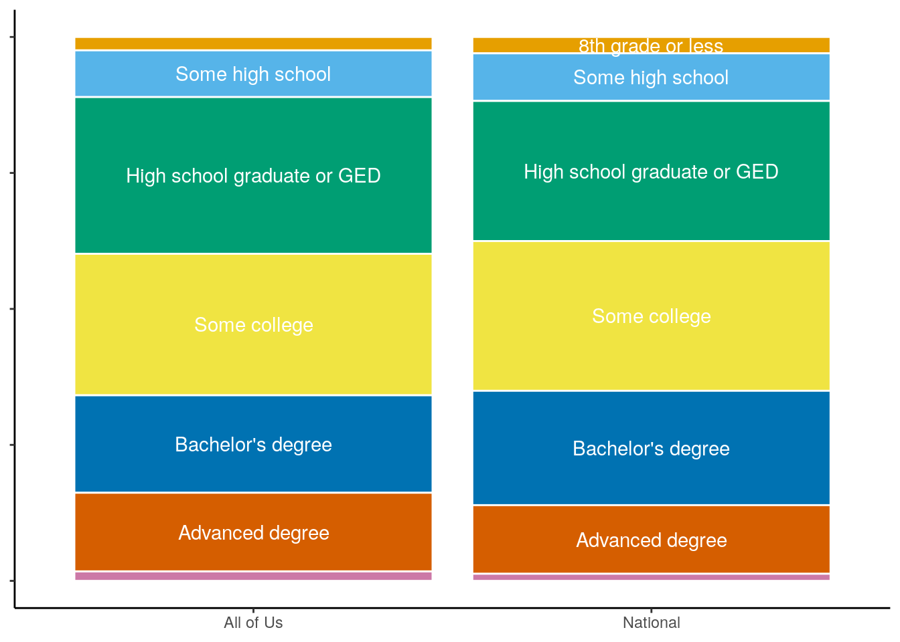
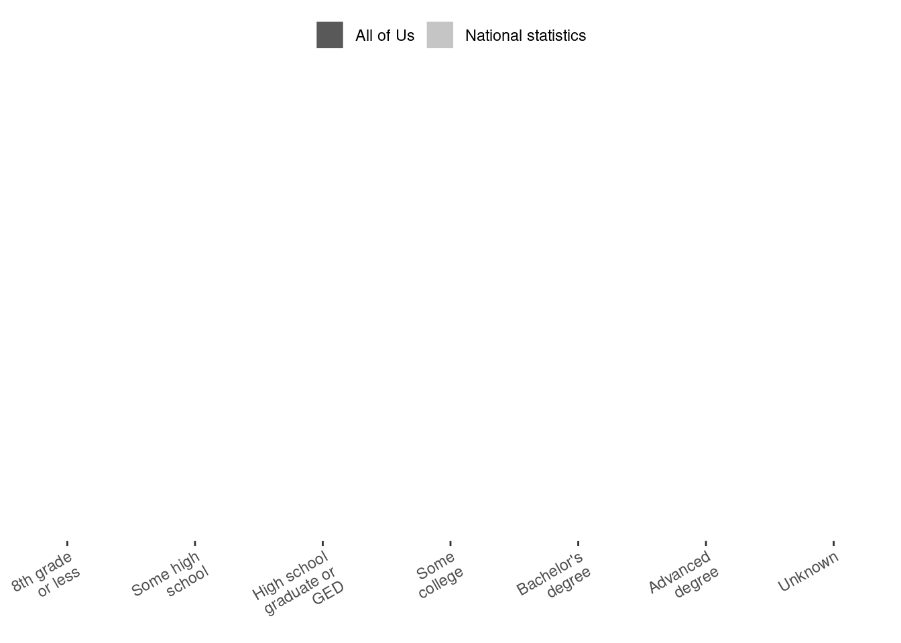

library(tidyverse)
library(allofus)
library(gtsummary)
library(ggokabeito)
theme_set(theme_classic())Compare All of Us live births to national data
con <- aou_connect()hipps <- read_rds(here::here("workbench/hipps_cleaned_restricted.rds")) %>%
mutate(
year = year(inferred_episode_end),
across(ends_with("_outcome_category"), ~ fct_relevel(
fct_na_value_to_level(fct_recode(.x,
"Ectopic pregnancy" = "ECT",
"Abortion" = "AB", "Abortion" = "SA", "Delivery record only" = "DELIV",
"Stillbirth" = "SB", "Missing outcome" = "PREG", "Live birth" = "LB"
), level = "Missing outcome"),
"Ectopic pregnancy", "Abortion", "Stillbirth", "Live birth",
"Delivery record only", "Missing outcome"
),
.names = "{str_replace(.col, 'category', 'cat')}"
),
concordant = fct_relevel(
factor(
as.numeric(as.character(HIP_outcome_cat) == as.character(PPS_outcome_cat)),
labels = c("Discordant", "Concordant")
),
"Concordant", "Discordant"
),
which_algorithm = ifelse(concordant == "Discordant", NA,
ifelse(final_outcome_cat == HIP_outcome_cat, "HIP", "PPS")
),
precision_category = fct_relevel(
precision_category,
"week", "week_poor-support", "two-week", "three-week",
"month", "two-month", "three-month", "non-specific"
),
race_eth_cat = fct_recode(race_eth_cat,
"White" = "MENA" # for the purposes of this comparison
)
)hipps %>%
ggplot(aes(year)) +
geom_bar() +
coord_cartesian(expand = FALSE) +
labs(x = "Year of pregnancy", y = "Number of pregancies")
read_natality <- function(year, filename) {
suppressWarnings({
readxl::read_excel(filename, sheet = as.character(year), ) %>%
janitor::clean_names() %>%
select(-notes, -ends_with("code"), -any_of("percent_of_total_births")) %>%
filter(!is.na(state_of_residence)) %>%
mutate(year = year)
})
}
natality <- map(2016:2022, read_natality, filename = here::here("data/natality_stats.xlsx")) %>%
bind_rows() %>%
filter(mothers_single_race_6 != "American Indian or Alaska Native")
natality_term <- map(2016:2022, read_natality, filename = here::here("data/natality_stats_term.xlsx")) %>%
bind_rows() %>%
filter(mothers_single_race_6 != "American Indian or Alaska Native")
natality_all <- natality %>%
left_join(natality_term,
by = c(
"state_of_residence", "year", "age_of_mother_9",
"mothers_single_race_6", "mothers_education",
"mothers_hispanic_origin"
),
suffix = c("_total", "_term")
) %>%
mutate(
births_preterm = births_total - births_term,
births_total_rev = ifelse(is.na(births_preterm), NA, births_total)
)live_births <- hipps %>%
filter(final_outcome_cat == "Live birth", year %in% 2016:2022)year_table <- live_births %>%
summarise(n = n(), .by = "year") %>%
mutate(prop = n / sum(n))
year_table| year | n | prop |
|---|
by_age <- natality %>%
summarise(
births = sum(births),
.by = c("age_of_mother_9", "year")
) %>%
filter(age_of_mother_9 != "Under 15 years") %>%
left_join(summarise(live_births, births = n(), .by = c("mom_age_cat", "year")),
by = join_by(age_of_mother_9 == mom_age_cat, year == year),
suffix = c("_national", "_allofus")
) %>%
mutate(across(starts_with("births"), ~ ifelse(is.na(.x), 0, .x))) %>%
filter(age_of_mother_9 != "50 years and over")
chi_stat <- by_age %>%
left_join(year_table, by = join_by(year)) %>%
group_by(age_of_mother_9) %>%
summarise(
births_allofus = sum(births_allofus),
expected_births_us = sum(births_national * prop), .groups = "drop"
) %>%
mutate(expected_prop = expected_births_us / sum(expected_births_us))
chisq.test(chi_stat$births_allofus, p = chi_stat$expected_prop)Error in chisq.test(chi_stat$births_allofus, p = chi_stat$expected_prop): at least one entry of 'x' must be positiveby_age_table <- by_age %>%
group_by(year) %>%
mutate(across(starts_with("births"), ~ .x / sum(.x))) %>%
ungroup() %>%
left_join(year_table, by = join_by(year)) %>%
summarise(across(starts_with("births"), ~ weighted.mean(.x, w = prop)), .by = "age_of_mother_9")
by_age_table| age_of_mother_9 | births_national | births_allofus |
|---|---|---|
| 15-19 years | NA | NA |
| 20-24 years | NA | NA |
| 25-29 years | NA | NA |
| 30-34 years | NA | NA |
| 35-39 years | NA | NA |
| 40-44 years | NA | NA |
| 45-49 years | NA | NA |
by_edu <- natality %>%
mutate(
edu_cat = fct_collapse(mothers_education,
"Advanced degree" = c(
"Doctorate (PhD, EdD) or Professional Degree (MD, DDS, DVM, LLB, JD)",
"Master's degree (MA, MS, MEng, MEd, MSW, MBA)"
),
"Bachelor's degree" = c("Bachelor's degree (BA, AB, BS)"),
"Some college" = c("Associate degree (AA, AS)", "Some college credit, but not a degree"),
"High school graduate or GED" = c("High school graduate or GED completed"),
"Some high school" = c("9th through 12th grade with no diploma"),
"8th grade or less" = c("8th grade or less"),
"Unknown" = c("Unknown or Not Stated")
),
edu_cat = fct_relevel(
edu_cat, "8th grade or less", "Some high school", "High school graduate or GED",
"Some college", "Bachelor's degree", "Advanced degree"
)
) %>%
summarise(
births = sum(births),
.by = c("edu_cat", "year")
) %>%
left_join(
{
live_births %>%
mutate(
edu_cat = fct_collapse(education,
"Advanced degree" = c("AdvancedDegree"),
"Bachelor's degree" = c("CollegeGraduate"),
"Some college" = c("CollegeOnetoThree"),
"High school graduate or GED" = c("TwelveOrGED"),
"Some high school" = c("NineThroughEleven"),
"8th grade or less" = c(
"NeverAttended", "OneThroughFour",
"FiveThroughEight"
),
"Unknown" = c("No answer")
),
edu_cat = fct_relevel(
edu_cat, "8th grade or less", "Some high school", "High school graduate or GED",
"Some college", "Bachelor's degree", "Advanced degree"
)
) %>%
summarise(births = n(), .by = c("edu_cat", "year"))
},
by = join_by(edu_cat, year),
suffix = c("_national", "_allofus")
) %>%
mutate(across(starts_with("births"), ~ ifelse(is.na(.x), 0, .x)))
chi_stat <- by_edu %>%
left_join(year_table, by = join_by(year)) %>%
group_by(edu_cat) %>%
summarise(
births_allofus = sum(births_allofus),
expected_births_us = sum(births_national * prop), .groups = "drop"
) %>%
mutate(expected_prop = expected_births_us / sum(expected_births_us))
chisq.test(chi_stat$births_allofus, p = chi_stat$expected_prop)Error in chisq.test(chi_stat$births_allofus, p = chi_stat$expected_prop): at least one entry of 'x' must be positiveby_edu_table <- by_edu %>%
group_by(year) %>%
mutate(across(starts_with("births"), ~ .x / sum(.x))) %>%
ungroup() %>%
left_join(year_table, by = join_by(year)) %>%
summarise(across(starts_with("births"), ~ weighted.mean(.x, w = prop)), .by = "edu_cat")
by_edu_table| edu_cat | births_national | births_allofus |
|---|---|---|
| 8th grade or less | NA | NA |
| Some high school | NA | NA |
| High school graduate or GED | NA | NA |
| Some college | NA | NA |
| Unknown | NA | NA |
| Bachelor’s degree | NA | NA |
| Advanced degree | NA | NA |
by_race <- natality %>%
mutate(race_eth_cat = case_when(
mothers_hispanic_origin == "Hispanic or Latino" ~ "Hispanic or Latino",
mothers_single_race_6 == "Black or African American" ~ "Black or African-American",
.default = mothers_single_race_6
)) %>%
summarise(
births = sum(births),
.by = c("race_eth_cat", "year")
) %>%
left_join(summarise(live_births, births = n(), .by = c("race_eth_cat", "year")),
by = join_by(race_eth_cat, year),
suffix = c("_national", "_allofus")
) %>%
mutate(across(starts_with("births"), ~ ifelse(is.na(.x), 0, .x))) %>%
filter(race_eth_cat != "Middle Eastern or North African")
chi_stat <- by_race %>%
left_join(year_table, by = join_by(year)) %>%
group_by(race_eth_cat) %>%
summarise(
births_allofus = sum(births_allofus),
expected_births_us = sum(births_national * prop), .groups = "drop"
) %>%
mutate(expected_prop = expected_births_us / sum(expected_births_us))
chisq.test(chi_stat$births_allofus, p = chi_stat$expected_prop)Error in chisq.test(chi_stat$births_allofus, p = chi_stat$expected_prop): at least one entry of 'x' must be positiveby_race_table <- by_race %>%
group_by(year) %>%
mutate(across(starts_with("births"), ~ .x / sum(.x))) %>%
ungroup() %>%
left_join(year_table, by = join_by(year)) %>%
summarise(across(starts_with("births"), ~ weighted.mean(.x, w = prop)), .by = "race_eth_cat") %>%
mutate(
race_eth_cat_col = str_wrap(race_eth_cat, width = 30),
race_eth_cat_col = fct_infreq(race_eth_cat_col, w = births_national)
)Error in `mutate()`:
ℹ In argument: `race_eth_cat_col = fct_infreq(race_eth_cat_col, w =
births_national)`.
Caused by error in `fct_infreq()`:
! All `w` must be non-negative and non-missing.
6 problems at positions 1, 2, 3, 4, 5, and 6.by_race_table %>% select(-any_of("race_eth_cat_col"))Error in eval(expr, envir, enclos): object 'by_race_table' not foundby_state <- natality %>%
summarise(
births = sum(births),
.by = c("state_of_residence", "year")
) %>%
left_join(
{
live_births %>%
mutate(state_of_residence = state_cat) %>%
summarise(births = n(), .by = c("state_of_residence", "year"))
},
by = join_by(state_of_residence, year),
suffix = c("_national", "_allofus")
) %>%
mutate(across(starts_with("births"), ~ ifelse(is.na(.x), 0, .x))) %>%
group_by(year) %>%
mutate(across(starts_with("births"), ~ .x / sum(.x))) %>%
ungroup() %>%
left_join(year_table, by = join_by(year)) %>%
summarise(across(starts_with("births"), ~ weighted.mean(.x, w = prop)), .by = "state_of_residence")by_age_table %>%
pivot_longer(starts_with("births"), names_to = "data", values_to = "percent") %>%
mutate(data = fct_recode(data,
"National" = "births_national",
"All of Us" = "births_allofus"
)) %>%
ggplot(aes(data, percent, fill = age_of_mother_9)) +
geom_col(position = "fill", color = "white") +
geom_text(aes(label = if_else(percent > 0.03, age_of_mother_9, "")),
position = position_fill(vjust = 0.5), color = "white"
) +
labs(y = NULL, fill = NULL, x = NULL) +
theme(
axis.text.y = element_blank(),
legend.position = "none"
) +
scale_fill_okabe_ito()
by_age_table %>%
pivot_longer(starts_with("births"), names_to = "data", values_to = "percent") %>%
mutate(data = fct_recode(data,
"National statistics" = "births_national",
"All of Us" = "births_allofus"
)) %>%
ggplot(aes(age_of_mother_9, percent, fill = age_of_mother_9, alpha = data)) +
geom_col(position = "dodge", color = "white") +
scale_alpha_manual(values = c(1, .35)) +
coord_cartesian(expand = FALSE) +
scale_y_continuous(labels = scales::percent) +
scale_x_discrete(labels = scales::label_wrap(12)) +
labs(y = NULL, fill = NULL, x = NULL, alpha = NULL) +
theme(
axis.text.x = element_text(angle = 30, hjust = 1),
legend.position = "top"
) +
scale_fill_okabe_ito(guide = "none")
by_edu_table %>%
pivot_longer(starts_with("births"), names_to = "data", values_to = "percent") %>%
mutate(data = fct_recode(data,
"National" = "births_national",
"All of Us" = "births_allofus"
)) %>%
ggplot(aes(data, percent, fill = edu_cat)) +
geom_col(position = "fill", color = "white") +
geom_text(aes(label = if_else(percent > 0.03, edu_cat, "")),
position = position_fill(vjust = 0.5), color = "white"
) +
labs(y = NULL, fill = NULL, x = NULL) +
theme(
axis.text.y = element_blank(),
legend.position = "none"
) +
scale_fill_okabe_ito()
by_edu_table %>%
pivot_longer(starts_with("births"), names_to = "data", values_to = "percent") %>%
mutate(data = fct_recode(data,
"National statistics" = "births_national",
"All of Us" = "births_allofus"
)) %>%
ggplot(aes(edu_cat, percent, fill = edu_cat, alpha = data)) +
geom_col(position = "dodge", color = "white") +
scale_alpha_manual(values = c(1, .35)) +
coord_cartesian(expand = FALSE) +
scale_y_continuous(labels = scales::percent) +
scale_x_discrete(labels = scales::label_wrap(12)) +
labs(y = NULL, fill = NULL, x = NULL, alpha = NULL) +
theme(
axis.text.x = element_text(angle = 30, hjust = 1),
legend.position = "top"
) +
scale_fill_okabe_ito(guide = "none")
by_race_table %>%
pivot_longer(starts_with("births"), names_to = "data", values_to = "percent") %>%
mutate(data = fct_recode(data,
"National" = "births_national",
"All of Us" = "births_allofus"
)) %>%
ggplot(aes(data, percent, fill = race_eth_cat_col)) +
geom_col(position = "fill", color = "white") +
geom_text(aes(label = if_else(percent > 0.03, race_eth_cat, "")),
position = position_fill(vjust = 0.5), color = "white"
) +
labs(y = NULL, fill = NULL, x = NULL) +
theme(
axis.text.y = element_blank(),
legend.position = "none"
) +
scale_fill_okabe_ito()Error in eval(expr, envir, enclos): object 'by_race_table' not foundby_race_table %>%
pivot_longer(starts_with("births"), names_to = "data", values_to = "percent") %>%
mutate(data = fct_recode(data,
"National statistics" = "births_national",
"All of Us" = "births_allofus"
)) %>%
ggplot(aes(race_eth_cat_col, percent, fill = race_eth_cat_col, alpha = data)) +
geom_col(position = "dodge", color = "white") +
scale_alpha_manual(values = c(1, .35)) +
coord_cartesian(expand = FALSE) +
scale_y_continuous(labels = scales::percent) +
scale_x_discrete(labels = scales::label_wrap(12)) +
labs(y = NULL, fill = NULL, x = NULL, alpha = NULL) +
theme(
axis.text.x = element_text(angle = 30, hjust = 1),
legend.position = "top"
) +
scale_fill_okabe_ito(guide = "none")Error in eval(expr, envir, enclos): object 'by_race_table' not founddemo_table <- read_rds(here::here("workbench/demographics_table.rds"))Error in readRDS(con, refhook = refhook): cannot open the connectiondemo_table <- as_gt(demo_table)Error in eval(expr, envir, enclos): object 'demo_table' not foundbind_rows(
select(by_race_table, -race_eth_cat_col, -births_allofus),
by_edu_table %>%
mutate(edu_cat = fct_collapse(edu_cat,
"Less than high school" = c("8th grade or less", "Some high school"),
"High school graduate" = c("High school graduate or GED", "Some college"),
"College graduate" = "Bachelor's degree"
)) %>%
group_by(edu_cat) %>%
summarise(births_national = sum(births_national)),
select(by_state, -births_allofus) %>%
mutate(
state_of_residence = fct_collapse(state_of_residence, "Other" = by_state$state_of_residence[!by_state$state_of_residence %in% c("Arizona", "New York", "California", "Massachusetts", "Pennsylvania", "Illinois", "Wisconsin", "Alabama", "Michigan")]),
state_of_residence = fct_relevel(state_of_residence, "Arizona", "New York", "California", "Massachusetts", "Pennsylvania", "Illinois", "Wisconsin", "Alabama", "Michigan", "Other")
) %>%
group_by(state_of_residence) %>%
summarise(births_national = sum(births_national)),
select(by_age_table, -births_allofus) %>%
mutate(age_of_mother_9 = ifelse(age_of_mother_9 == "45-49 years", "45 years and over", age_of_mother_9))
) %>%
pivot_longer(-births_national, values_drop_na = TRUE) %>%
select(name, value, births_national) %>%
mutate(births_national = paste0("(", style_percent(births_national, digits = 1), "%)")) %>%
gt::gt(rowname_col = "value", groupname_col = "name")Error in eval(expr, envir, enclos): object 'by_race_table' not foundwrite_csv(by_state, here::here("results/percent_by_state.csv"))